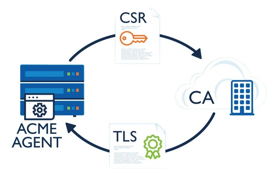

Si vous êtes habitués à générer vos certificats SSL/TLS manuellement à
chaque fois, il faut savoir que le protocol ACME existe ! Cette doc va
exposer ses bases, et renverra vers des ressources externes à la fin
pour apprendre à en mettre en place.
Ça marche comment ?
ACME = Automated Certificate Management Environment.
L'ACME offre un cadre de travail permettant d'automatiser la gestion de
ses certificats SSL/TLS pour un nom de domaine :
Pour commencer vous avez besoin d'installer un client dans votre
projet. Prenons l'exemple de Certbot.
-
Certbot est un outil aidant à installer l'ACME, le configurer et
l'automatiser son utilisation par votre serveur.
-
Qui dit certificat dit vérification : Certbot génère les fichiers qui
seront vérifiés par l'autorité de certification Let's Encrypt. C'est
l'étape CSR (Certificate Signing Request)
-
Let's Encrypt sera alors en mesure de confirmer que vous êtes le
propriétaire du nom de domaine et attribuer au serveur un certificat.
-
Avec l'ACME, le certificat est renouvelé tous les 90 jours !
-
L'ACME peut être mise en place gratuitement selon le client (Oui avec
Certbot)
L'objectif de l'ACME est donc d'aider à la mise en place d'un serveur
HTTPS dont les certificats seront renouvelés automatiquement.
Du coup le SSL/TLS c'est avec ça que ça marche ?
Non !
L'ACME automatise juste le processus de génération de certificat. Le
SSL/TLS vient après : lui, il met en place l'échange de données cryptées
qui se produit entre un client et le serveur en HTTPS.
Voyons un peu comment le SSL/TLS fonctionne.
Déjà, clarifions en une phrase la différence entre SSL et TLS :
Dans le langage courant, il n'y en a pas !
- Lorsqu'on parle de SSL, il s'agit en fait du TLS.
-
En réalité, le SSL et les TLS sont deux protocols différents visant à
résoudre la même problématique : renforcer la sécurité au sein des
communications réseau.
-
Le TLS est plus robuste, c'est pourquoi le SSL a été largement
abandonné. On continue de parler de "SSL" car dans l'usage, l'acronyme
est plus parlant.
Le fonctionnement de base du TLS :
Rappel : HTTPS = HTTP + TLS
-
Un client (un navigateur, une API...) interroge un serveur pour
consommer ses ressources.
-
Le serveur présente au client son certificat, ainsi que sa clé
publique (un peu comme sa carte d'identité).
-
Le client vérifie le certificat en le soumettant à des autorités de
certificats (Let's Encrypt par exemple). Si le certificat est valide,
et émis pour le domaine en question.
-
Si le certificat convient, le client génère une clé cryptée pour la
session en cours. Il servira de communication lors des échanges avec
le serveur (Handshake). Derrière, c'est le protocol cryptographique
Diffie-Hellman
qui assure l'échange de la clé et la confidentialité des données.
-
En HTTPS, les données échangées sont cryptées elles aussi, mais même
si elles sont interceptées, si la clé privée ne peut pas être
déchiffrée l'information ne pourra pas être récupérée.
Qui a créé tout ça ?
On a beaucoup mentionné Let's Encrypt, et c'est justement l'ISRG
(Internet Security Research Group) qui a développé l'ACME pour Let's Encrypt.
Plus tard, le protocol a été standardisé par l'IETF (Internet Engineering Task Force) dans le RFC 8555.
L'IETF C'est le principal organisme de normalisation de l'internet.
Ils publient des documents comme les RFC (Request For Comment), qui adressent les spécificités techniques d'internet, comme ses
protocols par exemple.
Conclusion
3 points clés :
-
l'ACME automatise le renouvellement d'un certificat TLS pour un nom de
domaine
-
Ensuite, le SSL/TLS peut se produire car le nom de domaine possède un
certificat !
-
Il a été créé par des chercheurs puis normalisé des ingénieurs
travaillant pour la sécurité et la normalisation d'internet.
Sources sympas

Image illustrant le protocole ACME